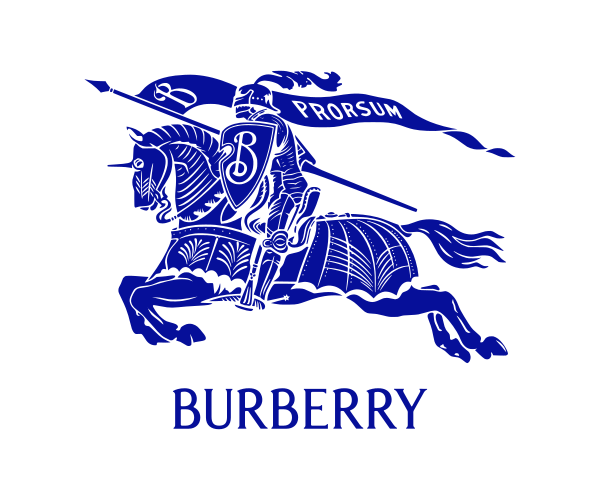
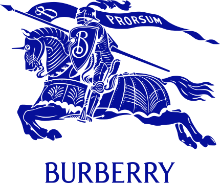

버버리 BURBERRY
버버리(Burberry)는 1856년 설립된 영국의 럭셔리 패션 하우스이다.
최종 업데이트

버버리는 어떤 브랜드인가
버버리는 1856년 영국 햄프셔 베이싱스토크에서 21세의 토머스 버버리(Thomas Burberry)가 포목상 도제 출신으로 연 잡화점에서 출발한 영국 럭셔리 하우스다. 1879년 방수·통기성을 갖춘 개버딘 원단을 개발해 아웃도어 의류의 기준을 바꿨고, 제1차 세계대전 중 영국 장교용으로 만든 트렌치코트와 1920년대부터 코트 안감에 쓰인 체크 패턴이 브랜드의 상징으로 자리 잡았다.
본사는 런던에 있으며 2002년 7월 런던증권거래소에 상장했다.
버버리는 어떻게 봐야 할까
버버리의 핵심 차별점은 프랑스 대형 그룹이 주도하는 럭셔리 시장에서 독립적으로 남은 영국계 하우스라는 점, 그리고 트렌치코트·체크(노바체크)라는 명확한 유산 자산이다. 다만 2024/25 회계연도(2025년 3월 마감) 매출이 전년 대비 17% 줄어든 약 25억 파운드로 부진했고, 이를 배경으로 2024년 7월 조슈아 슐먼(Joshua Schulman)이 신임 최고경영자로 합류했다.
슐먼은 '버버리 포워드' 전략으로 아우터·스카프 등 본질 카테고리에 재집중하며 회생을 추진했고, 2025년 11월 발표된 2026 회계연도 2분기에 비교가능 매출이 2년 만에 2% 성장으로 돌아섰다. 한국에서는 손흥민을 브랜드 앰배서더로 기용해 인지도를 넓혔고, 트렌치코트는 백화점과 공식·온라인 채널에서 꾸준히 소비된다.
버버리는 어떻게 시작되고 성장했나
시작은 1856년 토머스 버버리가 베이싱스토크에 연 잡화점이었다. 1879년 그는 실을 짜기 전에 방수 처리하는 개버딘 원단을 고안해 무겁던 고무 코트를 대체했고, 이 기술력 덕분에 1911년에는 남극점에 처음 도달한 로알 아문센과 1914년 남극 횡단에 나선 어니스트 섀클턴 같은 탐험가의 의복을 공급했다.
제1차 세계대전 동안 참호 속 영국 장교의 필요에 맞춰 만든 외투가 곧 '트렌치코트'로 불리며 종전 후 민간에 퍼졌고, 1920년대부터 그 안감에 들어간 체크가 식별 기호가 됐다. 로고의 뿌리인 기마 기사 도안은 1901년 공모전 당선작이며, 회사는 2002년 7월 런던 증시에 올라 글로벌 럭셔리 기업으로 성장했다.
버버리의 브랜드 아이덴티티는 무엇인가
버버리의 가치관은 영국성과 헤리티지를 일상에 녹이는 데 있다. 외투 안감에서 출발한 노바체크와 헤이마켓 체크는 즉시 알아보는 패턴 자산이고, 1901년 도안된 기마 기사 로고는 라틴어 '프로르숨(Prorsum, 앞으로)'을 깃발에 새긴 상징이다.
2022년 9월 최고크리에이티브책임자로 합류한 대니얼 리(Daniel Lee)는 2023년 2월 데뷔 컬렉션에서 이 기사 모티프를 부활시켜 가방 하드웨어·프린트·주얼리 전반에 적용했다. 타깃은 헤리티지를 중시하는 럭셔리 고객이며, 절제된 영국식 위트와 일상성을 보이스로 삼는다.
버버리의 대표 제품과 서비스는 무엇인가
대표 품목은 켄싱턴·첼시 등 라인의 트렌치코트와 체크·캐시미어 머플러다. 한국 유통 기준 트렌치코트는 모델에 따라 약 39만원대부터 364만원대까지 폭넓게 형성되며, 켄싱턴·해본 등 클래식 라인이 중심이다.
판매는 공식 부티크와 온라인몰, 주요 백화점, 일부 홈쇼핑·플랫폼 채널을 통해 이뤄진다. 회생 전략에서도 아우터와 스카프가 매출의 축으로 다시 강조됐다.
버버리는 지금 어떤 상태인가
본사는 영국 런던에 있고, 최고경영자는 2024년 7월 취임한 조슈아 슐먼이다. 2024/25 회계연도 매출은 약 25억 파운드로 전년 대비 17% 감소했으나 순이익은 약 2천800만 달러로 흑자 전환했다.
이후 2026 회계연도 2분기(2025년 11월 발표)에 비교가능 매출이 2% 성장하고 총이익률이 67.9%로 개선되는 등 회복 신호가 나타났다. 세부 비공개 항목은 미공개로 둔다.
버버리 연혁 — 주요 사건은 언제였나
버버리 로고는 어떻게 변해왔나
대표 로고대표 브랜드 마크
BI/CI 아카이브보관 이미지 2
BI/CI 아카이브 4보관 이미지 4자주 묻는 질문
버버리는 어느 나라 브랜드인가요?
버버리는 영국의 패션·럭셔리 브랜드입니다.
버버리는 언제 설립되었나요?
버버리는 1856년 설립되었습니다.
버버리의 브랜드 아이덴티티는 무엇인가요?
버버리의 가치관은 영국성과 헤리티지를 일상에 녹이는 데 있다.
버버리의 대표 제품은 무엇인가요?
대표 품목은 켄싱턴·첼시 등 라인의 트렌치코트와 체크·캐시미어 머플러다.
버버리의 본사는 어디에 있나요?
본사는 영국 런던에 있고, 최고경영자는 2024년 7월 취임한 조슈아 슐먼이다.
버버리의 창업자는 누구인가요?
버버리의 창업자는 Thomas Burberry입니다(위키데이터 기준).
버버리의 공식 웹사이트는 어디인가요?
버버리의 공식 웹사이트는 https://www.burberry.com/ 입니다.
출처와 검증
버버리 관련 참고: 공식 웹사이트 · 위키데이터 Q390107 · 한국어 위키백과 · 영어 위키백과. 브랜드명은 한글과 원어를 함께 표기하되 데이터에 없는 표기는 만들지 않습니다. 기원 국가·설립연도는 검수된 정의문에서 확인된 값을 우선하고, 없을 때만 공식 웹사이트 URL이 일치하는 위키데이터 개체의 값을 씁니다. 위키데이터 값은 2026-09-07 기준입니다.